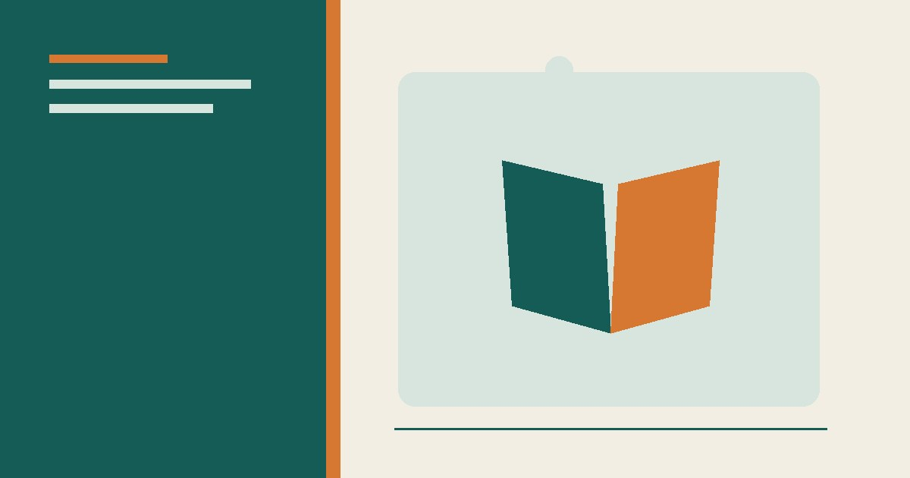
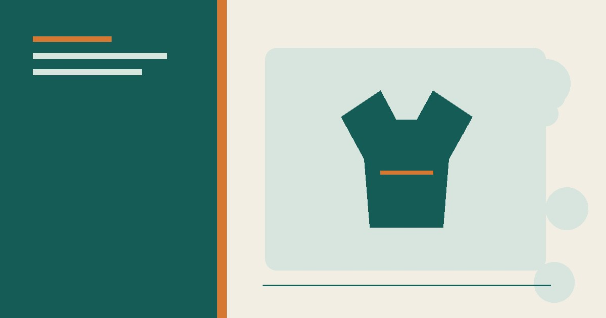
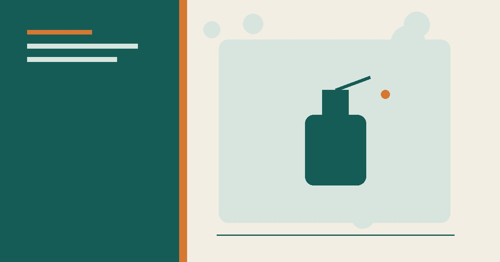
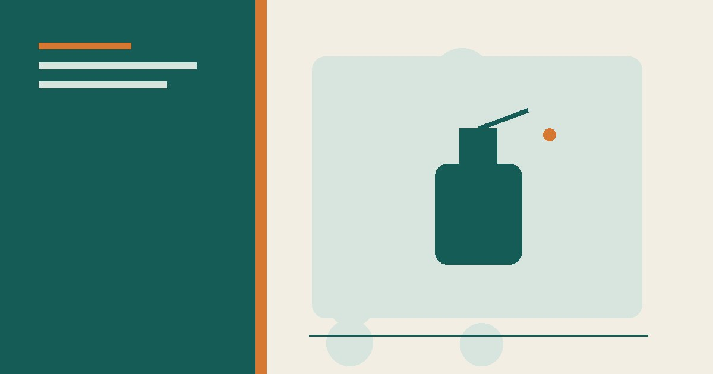

نصائح منزلية
ترتيب المنزل في 15 دقيقة يوميًا: خطة عملية
خطة عملية لترتيب المنزل في 15 دقيقة يوميًا فقط: جدول أسبوعي، قواعد ذهبية، وأدوات تساعدك على الحفاظ على بيت مرتب دائمًا.
دليل غسيل الملابس الصحيح: فرز الملابس، درجات حرارة الغسيل، اختيار المسحوق، إزالة البقع قبل الغسيل، والتجفيف السليم.

ملصق العناية وتعليمات الغسالة والمنظف مقدمة على أي حيلة عامة. اختبر معالجة البقع في جزء مخفي، ولا تخلط مبيّض الكلور مع الخل أو الأمونيا أو منظفات أخرى.
الملابس باهظة الثمن تتلف في الغسالة أكثر مما تتلف باللبس: ألوان تبهت، أقمشة تنكمش، وأنسجة تهرأ. الحقيقة أن معظم هذا الضرر يمكن تجنبه بمعرفة بسيطة. إليك الدليل الكامل لغسيل الملابس بالطريقة الصحيحة التي يحافظ بها المحترفون على الملابس.
الرموز على ملصقات الملابس ليست معقدة كما تبدو، القاعدة المبسطة:
قد يناسب الماء البارد كثيرًا من الملابس اليومية ويساعد على تقليل طاقة التسخين، لكن اتبع ملصق القماش وتعليمات المنظف والغسالة. لا تفترض أن الماء الدافئ يعقم؛ عند الحاجة إلى تطهير بسبب مرض اتبع إرشادات صحية وتعليمات المنتج.
الغسالة تثبت البقع أكثر مما تزيلها إذا دخلت مجففة. القواعد:
المنظفات الحديثة مركزة، والكمية الزائدة لا تنظف أكثر — بل تترك بقايا تلتصق بالملابس وتجذب الأوساخ وتضر بالغسالة. اتبع التعليمات على العبوة، وقلل الكمية في المياه الناعمة. أما منعم الأقمشة، فاستخدمه باعتدال على المناشف والملابس الرياضية (يقلل امتصاصها وقد يضر بالأقمشة التقنية).
غسيل الملابس الصحيح ليس علمًا معقدًا، بل عادات ذكية: فرز صحيح، ماء بارد، معالجة البقع فورًا، وكمية منظف مضبوطة. باتباع هذه القواعد، ستبقى ألوان ملابسك زاهية، وأقمشتها سليمة، وستوفر المال على البدائل والغسيل المتكرر.
الدلو يعني الغسيل العادي، والمثلث المخطط يعني التجفيف بالتعليق، والدائرة بداخل مربع تعني التجفيف بالمجفف. فرز الملابس حسب اللون والنسيج قبل الغسيل يمنع البهتان والتمدّد. لا تفرط في المسحوق؛ الكثير منه يتراكم في الألياف ويبقّي الروائح.
رُوجعت المعلومات العامة في هذا المقال بالاستناد إلى المصادر التالية. الروابط الخارجية قد تُحدّث محتواها بمرور الوقت.

خطة عملية لترتيب المنزل في 15 دقيقة يوميًا فقط: جدول أسبوعي، قواعد ذهبية، وأدوات تساعدك على الحفاظ على بيت مرتب دائمًا.

دليل تنظيف المنزل بمواد بسيطة مع جدول للأسطح واحتياطات السلامة والمواد التي لا يجوز خلطها، والفرق بين التنظيف والتعقيم.

طرق عملية لتقليل الروائح الكريهة في المنزل: تحديد المصدر، تنظيف المطبخ والحمام، تحسين التهوية، ومتى تحتاج إلى فني.